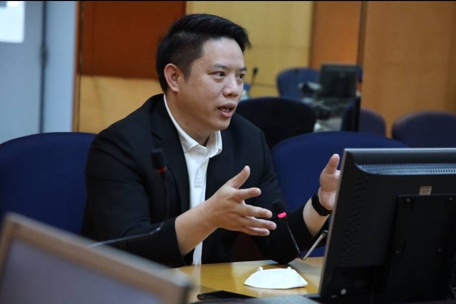
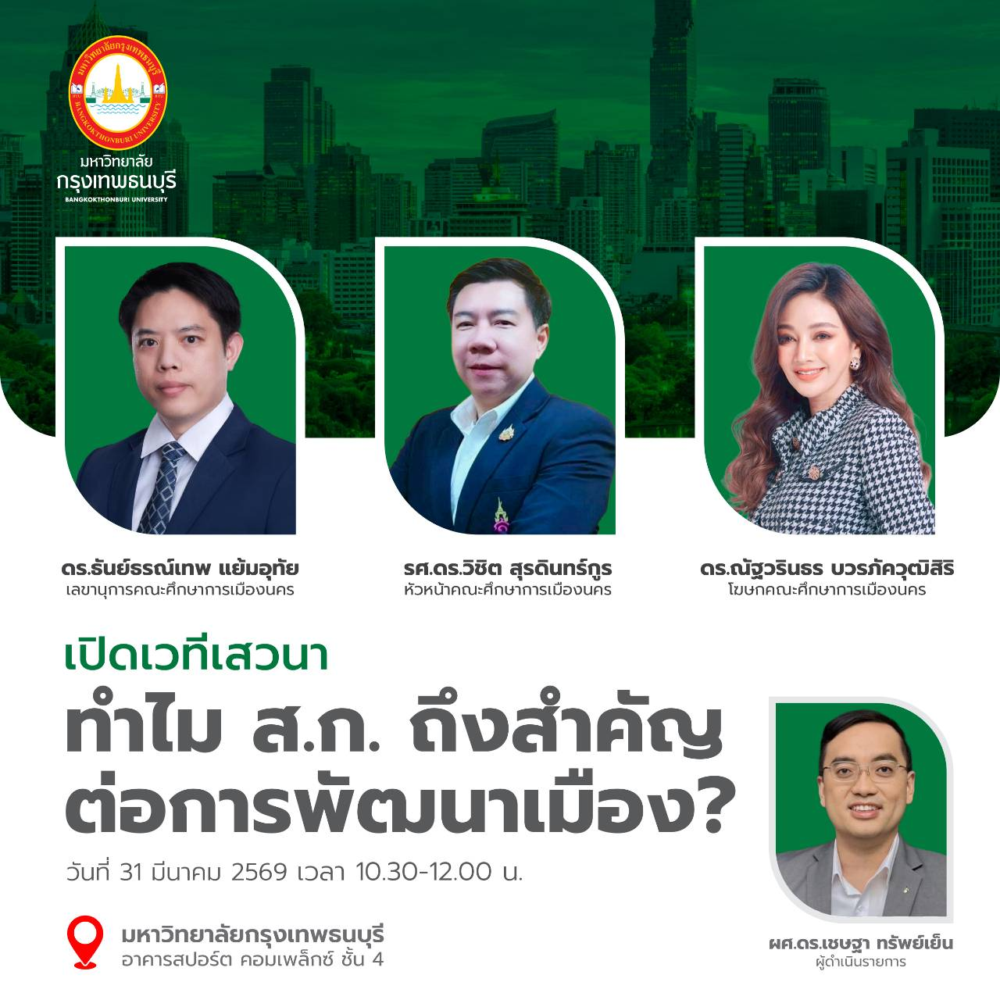

Bangkok Possible — ชุดบทความเพื่อความเข้าใจสภากรุงเทพมหานคร | บทความที่ 5 จาก 5

มีคำถามหนึ่งที่ผมคิดถึงอยู่บ่อยๆ ครับ —
"ถ้าสภา กทม. ประชุมก่อนสภาผู้แทนราษฎร จะดีกว่าไหม?"
ฟังดูเป็นเรื่องเล็กน้อย แต่จริงๆ แล้วมันเกี่ยวกับ "ความโปร่งใส" และ "การมีส่วนร่วม" ของคน กทม. ในกระบวนการนิติบัญญัติระดับชาติครับ
สภา กทม. ตาม พ.ร.บ. ระเบียบบริหารราชการ กทม. พ.ศ. 2528 มาตรา 30:
สภาผู้แทนราษฎร ตามข้อบังคับฯ พ.ศ. 2562:
เรื่องนี้เชื่อมกับ "ช่องว่างความโปร่งใส" ที่น่าสนใจครับ จากการเปรียบเทียบข้อบังคับของทั้งสองสภา พบความแตกต่างสำคัญ 5 ประการ:
| ประเด็น | สภา กทม. | สภาผู้แทนราษฎร |
|---|---|---|
| ถ่ายทอดสด | "อาจจัดให้มี" (ดุลยพินิจ) — ข้อ 27 | "ต้องจัดให้มี" + ล่ามภาษามือ — ข้อ 18 |
| การลงมติ | ยกมือ หรือใช้เครื่อง | ใช้เครื่องออกเสียง (e-Voting) เป็นหลัก — ข้อ 83 |
| เปิดเผยมติรายบุคคล | ประกาศผลรวมเท่านั้น — ข้อ 72-73 | บันทึกรายบุคคล + เผยแพร่ออนไลน์ — ข้อ 89 |
| รายงานการประชุม | สมาชิกตรวจดูได้ภายใน — ข้อ 32 | พิมพ์โฆษณา + เผยแพร่อิเล็กทรอนิกส์ |
| ประชาชนเข้าฟัง | ไม่มีบทบัญญัติรับรองสิทธิ | มีสิทธิ + ลงทะเบียนได้ — ข้อ 18 ว.4 |
สรุปง่ายๆ: สภาผู้แทนฯ = "สภาเปิด" (Open by Default) ส่วน สภา กทม. = "สภาปิด" (Closed by Default) ในแง่ของกฎระเบียบ
ถ้าสภา กทม. ประชุมในประเด็นที่เกี่ยวกับกรุงเทพฯ ก่อน วันที่ สส. กทม. ขึ้นอภิปรายในสภาผู้แทนฯ จะเกิดประโยชน์ได้ 3 อย่างครับ:
ทำได้ครับ และไม่ต้องรอแก้กฎหมายเลยด้วย
มาตรา 30 พ.ร.บ. กทม. 2528 ให้สภา กทม. กำหนดวันเริ่มประชุมสามัญประจำปีแต่ละสมัยเองได้ และตามข้อบังคับการประชุมสภา กทม. ข้อ 21 ประธานสภาสามารถนัดประชุมล่วงหน้าได้ 3 วัน
หมายความว่า — ถ้าสภา กทม. ต้องการปรับวันประชุมให้ประสานกับปฏิทินสภาผู้แทนฯ ทำได้เลยโดยมติสภา ไม่ต้องแก้ พ.ร.บ. กทม. ไม่ต้องรอรัฐบาล
ผมคิดว่าเป็นเรื่องที่น่าศึกษาและพูดถึงกันในเชิงนโยบายครับ ว่าจะมีแนวทางในการ ปรับปฏิทินการประชุมสภา กทม. ให้ประสานกับสภาผู้แทนราษฎรได้ดีขึ้น ในประเด็นที่กระทบกรุงเทพฯ โดยตรง
สิ่งที่ควรควบคู่กันด้วยคือการยกระดับความโปร่งใส — เช่น การถ่ายทอดสดแบบ "บังคับ" ไม่ใช่แค่ "ดุลยพินิจ" และการเปิดเผยมติรายบุคคลของ ส.ก. ต่อสาธารณะ ซึ่ง สก. ชุดใหม่ทำได้เองโดยยื่นญัตติแก้ข้อบังคับฯ ตาม ม.29 พ.ร.บ. กทม. 2528 โดยต้องมีสมาชิกรับรองเพียง 10 คน เท่านั้น
| ข้อกฎหมาย | สาระ |
|---|---|
| พ.ร.บ. กทม. 2528 ม.30 | สภา กทม. กำหนดสมัยประชุมสามัญและวันเริ่มประชุมเองได้ ปีละ 2-4 สมัย |
| ข้อบังคับสภา กทม. ข้อ 21 | นัดประชุมล่วงหน้าไม่น้อยกว่า 3 วัน |
| ข้อบังคับสภา กทม. ข้อ 27 | ถ่ายทอดสด = "อาจจัดให้มี" (ดุลยพินิจประธาน) |
| ข้อบังคับสภา กทม. ข้อ 72-73 | ลงมติ = ประกาศผลรวม ไม่บังคับเปิดเผยรายบุคคล |
| พ.ร.บ. กทม. 2528 ม.29 | สภา กทม. มีอำนาจตราข้อบังคับการประชุมของตนเอง |
| ข้อบังคับสภา กทม. ข้อ 127 | แก้ไขข้อบังคับ — ต้องมีสมาชิกรับรอง 10 คน |
| ข้อบังคับสภาผู้แทนฯ ข้อ 18 | ถ่ายทอดสด = "ต้องจัดให้มี" + ล่ามภาษามือ |
| ข้อบังคับสภาผู้แทนฯ ข้อ 89 | บันทึกมติรายบุคคล + เปิดเผยทางสื่ออิเล็กทรอนิกส์ |
"เรื่องเหล่านี้ไม่ซับซ้อนครับ แค่ต้องการ ส.ก. ที่คิดเรื่องพวกนี้เป็นธุรกิจประจำวัน ไม่ใช่แค่ตอนหาเสียง" — ธันย์ธรณ์เทพ แย้มอุทัย, Ph.D., Managing Director, LAS (Legal Advance Solution)

เชิญร่วมเสวนา: "ทำไม ส.ก. ถึงสำคัญต่อการพัฒนาเมือง?" | 31 มี.ค. 2569 เวลา 10.30-12.00 น. | มหาวิทยาลัยกรุงเทพธนบุรี
ชุดบทความ Bangkok Possible: 1. ส.ก. คือใคร? | 2. Traffy Fondue กับ ส.ก. | 3. นวัตกรรมนิติบัญญัติชิงรุก | 4. ทำไมต้องเลือก ส.ก. ให้ถูก | 5. สภา กทม. ประชุมก่อน สส.?